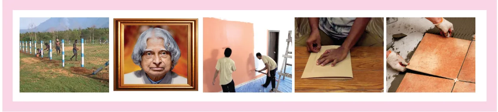
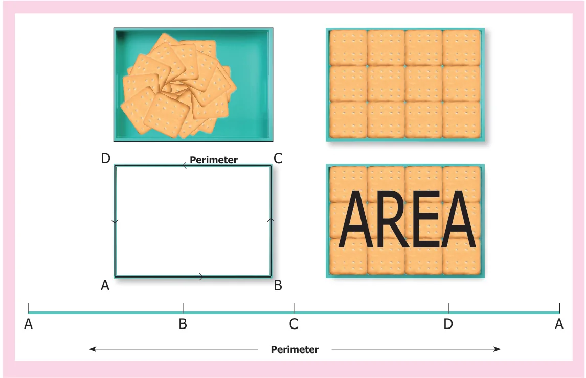
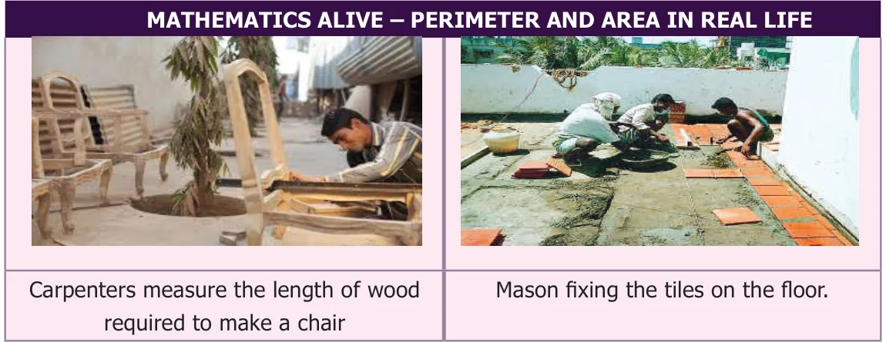

CHAPTER
3
PERIMETER AND AREA
Learning Objectives
●● To understand the concept of perimeter and area of closed shapes. ●● To calculate the perimeter and area of square, rectangle, right angled triangle and their combined shapes. ●● To understand the usage of units appropriately for area and perimeter.
We come across many situations in our day to day life which deal with shapes, their boundaries and surfaces. For example, ●● A fence built around a land. ●● Frame of a photograph. ●● Calculating the surface of the wall to know the quantity of the paint required. ●● Wrapping the textbooks and notebooks with brown sheets. ●● Calculating the number of tiles to be laid on the floor.

Some situations need to be handled tactfully and efficiently for the following reasons. ●● Using the optimum space to build a dining hall, kitchen, bedroom etc., in constructing a house in the available land and planning of materials required. ●● Arranging the things like cot, television, cup-board, table etc., in the proper place within the available space at home.
●● Reducing the expenses in all the above activities. In this context, learning of perimeter and area will be of great importance.
Think about the situation
Apoorva and her brother return from school. Their mother serves them some biscuits. While they eat them one by one, Apoorva arranges the biscuits on a tray. She finds that the tray can hold only 12 biscuits. If she has to extend spreading the remaining biscuits also in the same manner, she will need a bigger tray in size because, already 12 biscuits occupied the surface of the tray completely. The total length of the visible borders of the tray is said to be the perimeter and the surface occupied by the biscuits is said to be the area of the tray. Let us discuss about the perimeter and area in detail in this chapter.

